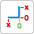
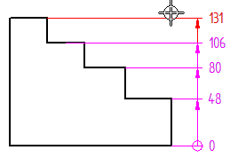
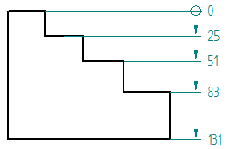

Change the origin dimension in a coordinate dimension group
-
Choose Home tab→Dimension group→Automatic Coordinate Dimension list→Change Coordinate Origin

. -
Move your cursor onto the dimension in the coordinate dimension group that you want to set as the new origin (0) dimension.
All of the dimensions that share the same origin are highlighted.
Example:
-
Click to change the origin dimension.
All dimension values in the group update based on the new origin.
Example:
-
You cannot change the origin for a formula-driven dimension or a dimension placed using a coordinate system.
-
You can show negative values to the left of the origin dimension using the Allow negative values option on the Lines and Coordinate tab in the Drawing View Style and Properties dialog boxes.

-
You can edit the value of an origin dimension (without generating a not-to-scale underline) using the Allow origin value change option on the Lines and Coordinate tab in the Drawing View Style and Properties dialog boxes.
For more information, see Change the coordinate origin value.
How do I
Place coordinate dimensions automaticallyPlace a coordinate dimension
Place a coordinate dimension using a coordinate system
Place an angular coordinate dimension
Place coordinate dimensions between drawing views
Change the coordinate origin value
Learn more
Ordinate dimensionsCoordinate dimension alignment sets
Adding and removing jogs on coordinate dimensions
Look up more details
Dimension command barCoordinate dimension handles
Automatic Coordinate Dimension command
Automatic Coordinate Dimension command bar
Keypoint Options dialog box
Coordinate Dimension command
Angular Coordinate Dimension command
Change Coordinate Origin command
Lines and Coordinate tab (Dimension Style and Dimension Properties)